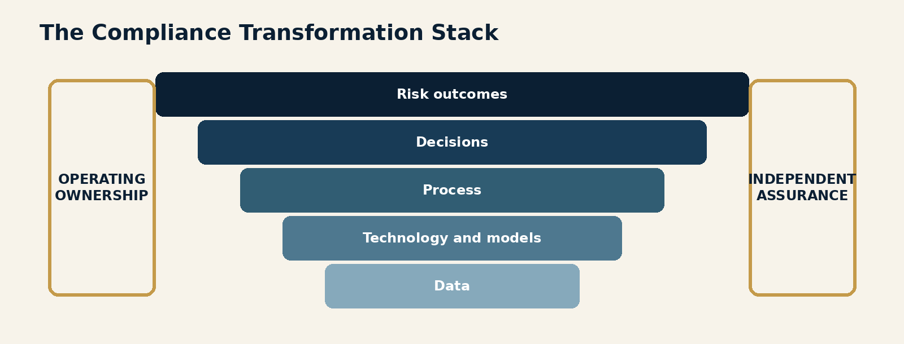
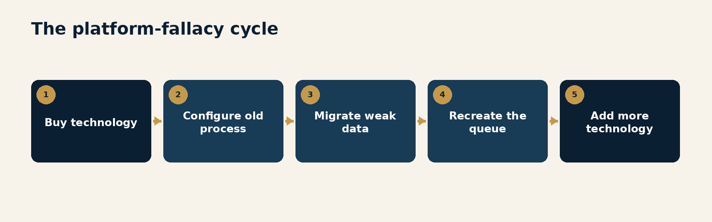
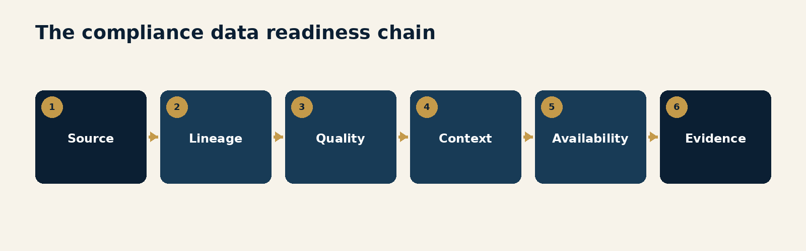
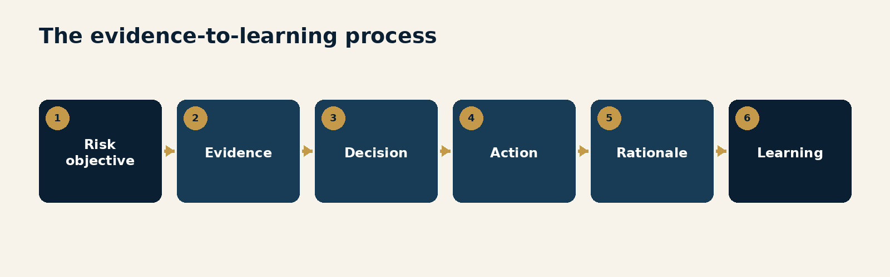
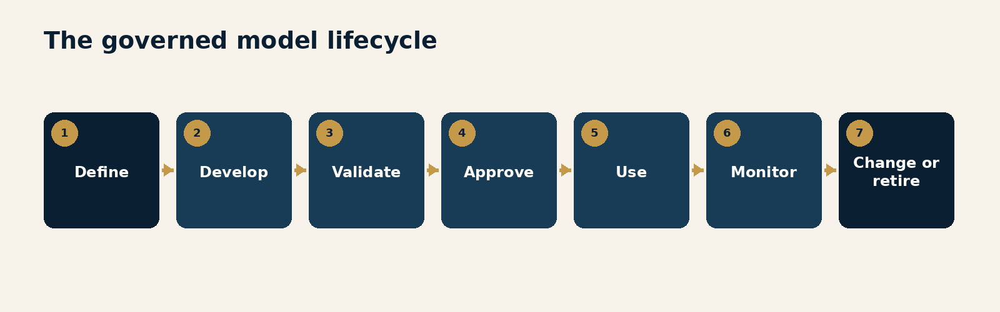
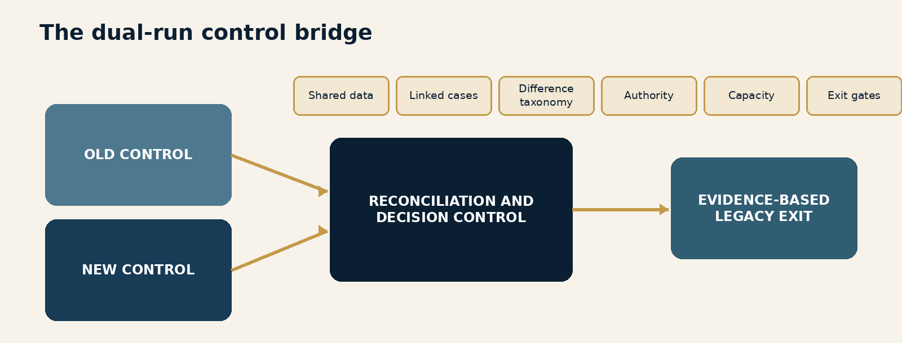
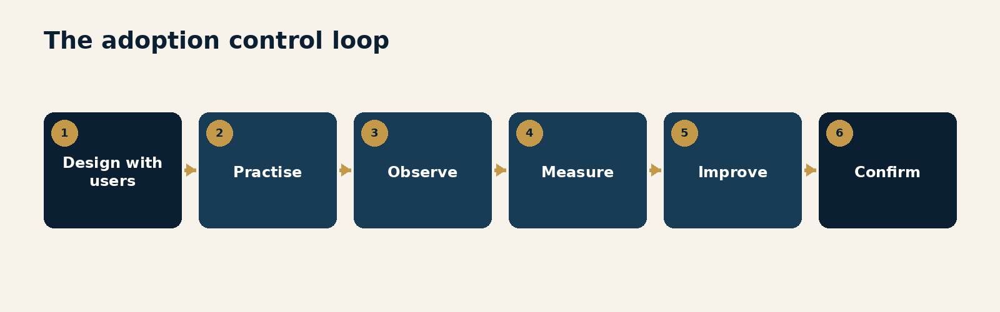
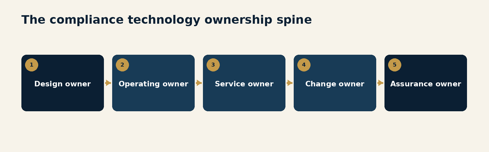
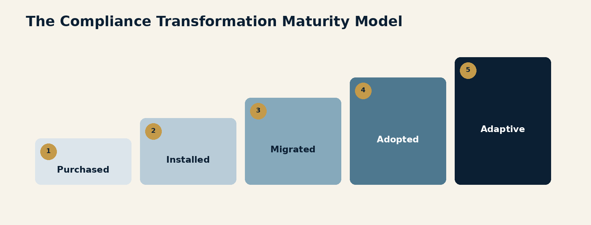

Foreword
Compliance transformation programmes often begin with an entirely reasonable sentence:
"We need a new platform."
The current system may be slow, inflexible, expensive, fragmented or simply old. Analysts may move between screens that disagree with one another. New rules may take months to deploy. Customer information may be spread across several repositories. Investigators may spend more time assembling evidence than evaluating risk. Management reporting may explain the size of the queue while saying remarkably little about whether the programme is finding financial crime.
Technology is clearly part of the answer.
It is just not the whole answer.
I have spent years leading large compliance organisations through technology and operating-model change. The most important lesson is not that implementation is hard. Everyone already knows implementation is hard. The deeper lesson is that technology exposes the design of the organisation around it.
A new platform quickly reveals whether data has a trusted owner, whether processes have a clear purpose, whether decisions have defined authority, whether models have meaningful governance, whether operations and technology agree on what "done" means, and whether leaders are willing to retire the workarounds that made the old system survivable.
The platform does not create those disciplines.
It makes their absence visible.
That is why transformation programmes can be technically successful and operationally disappointing. The software is installed. Interfaces are connected. Users are trained. The steering committee declares go-live. Yet alerts still arrive without useful context. Investigators still copy information into spreadsheets. Policy changes still wait in a backlog. Local teams still rely on informal processes. The new dashboard is more attractive, but the underlying control is not materially better.
The institution has changed technology without changing the system.
This volume argues that a compliance transformation must change six things together:
the risk outcome the programme is expected to produce;
the decisions required to produce that outcome;
the process through which evidence becomes action;
the data that makes the risk visible;
the technology and models that organise, detect or recommend; and
the operating ownership and assurance that keep the control working after launch.
These elements form the Compliance Transformation Stack.

The stack matters because weakness moves upward.
Poor source data becomes unreliable detection. Unclear process becomes inconsistent workflow. Weak decision rights become escalation. Incomplete ownership becomes production incidents. Absent assurance becomes false confidence. The platform may be performing exactly as configured while the programme performs badly.
The industry often treats these issues as implementation dependencies.
They are not.
They are the transformation.
FATF's work on new technologies for AML/CFT makes the same broad point. Technology can improve effectiveness, efficiency and auditability, but successful adoption depends on data quality, process readiness, stakeholder support, skills, governance and the ability to change legacy systems. The US Department of Justice asks whether compliance has timely access to relevant data, manages data quality and measures the performance of analytical models. The revised 2026 US interagency model-risk guidance emphasises development, use, validation, monitoring, governance and accountability across the model lifecycle. DORA requires controlled, risk-based change management and testing for ICT systems supporting financial services.
The direction is clear.
Regulators are not asking whether an institution owns modern software.
They are asking whether the institution can demonstrate that its compliance system works.
The distinction is important because buying technology is often the easiest part of transformation. Procurement can be lengthy, contracting can be painful and integration can be complicated. But those activities still have relatively visible beginnings and endings.
Operating change is less cooperative.
It requires teams to abandon familiar shortcuts, leaders to clarify ownership, engineers to prioritise data quality that customers never see, model managers to challenge enthusiastic business cases, and programme sponsors to acknowledge that go-live is the start of an operating obligation rather than the end of a project.
There is also an uncomfortable middle.
Old and new systems coexist. Results disagree. Volumes fluctuate. Users learn while customers continue transacting. Defects compete with enhancements. The old control cannot yet be retired, but maintaining it drains the people needed to stabilise the new one.
Transformation decks rarely linger on this phase.
Operations does.
This volume is for the leaders who must get through it. It focuses on the practical design choices that convert technology into a working control system: how to define the outcome before selecting the tool, prepare data before migration, redesign work before automation, govern models before deployment, control parallel running, make adoption measurable, establish operating ownership and measure whether the institution is genuinely better.
The central proposition is simple:
A new platform becomes a transformation only when the organisation can make better risk decisions, with better evidence, through a more resilient and continuously improving operating system.
Everything else is implementation.
Implementation matters.
It just does not get to borrow the word transformation for free.
Introduction
The Transformation Illusion
Compliance leaders are under understandable pressure to modernise.
Transaction volumes are rising. Payment messages are becoming richer. Customer journeys are increasingly digital. Criminal networks use automation, synthetic identities, deepfakes and distributed account structures. Regulators expect programmes to be risk-based, data-informed and able to evolve. Employees compare internal compliance tools with the software they use everywhere else and wonder why a simple case requires eleven tabs and a small personal archive of screenshots.
The market responds with platforms promising orchestration, analytics, machine learning, workflow, case management, screening, identity intelligence and a single view of risk.
Many of these capabilities are valuable.
The transformation illusion begins when the institution confuses access to capability with possession of capability.
Buying a platform gives the institution the opportunity to transform. It does not supply clean data, resolve inconsistent policies, decide who owns a customer restriction, establish model validation, redesign handoffs, create a production-support model or persuade investigators to stop using the spreadsheet that has never once forgotten their preferred column order.
Those are organisational acts.
A project can deliver software while the programme stays the same
Traditional implementation governance concentrates on familiar milestones:
requirements approved;
design completed;
build completed;
interfaces tested;
user acceptance testing passed;
training delivered;
cutover completed; and
hypercare closed.
These milestones are necessary.
They do not prove transformation.
A programme can meet every one of them while reproducing the old process inside a new platform. It can migrate incomplete data, automate unnecessary review steps, configure thresholds based on historic workload, treat user attendance as adoption and transfer unresolved defects to an operations team that did not design the control.
The project is green because the project measured delivery.
The control may be red because nobody measured whether risk decisions improved.
Transformation has two contracts
Every compliance technology programme has a visible contract and an invisible one.
The visible contract is with the provider. It specifies functionality, performance, security, implementation services, service levels, data rights, audit rights and commercial terms.
The invisible contract is inside the institution. It determines:
which business and compliance outcomes must change;
which processes will be removed rather than configured;
which data will be repaired and who owns it;
which models, rules and workflows require validation;
which teams will change roles or capacity;
who will accept risk during migration;
who will own the platform after the programme team leaves; and
when the old control can actually be retired.
Institutions often negotiate the visible contract carefully and leave the invisible one implied.
The provider then becomes the gravitational centre of decisions the institution has not made. Product demonstrations begin to substitute for operating design. Configuration options become policy. Technical constraints become process requirements. The institution gradually adapts itself to the implementation because the implementation has a plan and the organisation does not.
This is not the provider's fault.
A supplier can implement a product.
It cannot decide what the institution believes effective compliance should look like.
The Compliance Transformation Stack
The transformation should be designed as one connected stack.
1. Risk outcome
What financial-crime, regulatory, customer or operational outcome must improve?
Examples include better detection of a defined typology, faster restriction of high-risk activity, more accurate sanctions decisions, stronger customer-risk differentiation, more complete regulatory reporting or reduced customer harm from unnecessary review.
2. Decision architecture
Which decisions produce that outcome, who may make them, what evidence is required, what uncertainty is acceptable and when must the matter escalate?
3. Process
How does work move from event to decision to action to learning? Which steps add evidence or control, and which merely move the item between teams?
4. Data
Which sources, attributes, histories, identifiers and labels make the risk visible? Are they complete, timely, lawful, traceable and usable?
5. Technology and models
Which platform, rules, models, interfaces and automation support the process? What limitations exist, and how will change be controlled?
6. Operating ownership and assurance
Who runs, supports, changes, monitors and independently tests the control in production? How will incidents, drift, backlogs, defects and new risk information alter the system?
Transformation fails when one layer is designed as though the others will somehow accommodate it.
A model may improve detection but overwhelm an unchanged investigation process. A platform may improve workflow but lack the data needed for meaningful prioritisation. A redesigned process may depend on authority that local teams do not possess. A successful pilot may not survive production volumes. A global configuration may conflict with local legal requirements. A new control may work while the legacy control continues consuming the same staff and budget.
The stack is only as strong as its connections.
Six tests for a real transformation
Before calling a programme transformative, leaders should be able to answer six questions:
Outcome: Which risk or customer outcome is measurably better?
Decision: Which decisions are faster, sounder or more consistent?
Evidence: Which data is more complete, timely and explainable?
Operation: Which work has been removed, simplified or moved to the right owner?
Control: How are models, rules, workflows and changes governed in production?
Learning: How does new information improve the system after launch?
If the answer is primarily "the new platform is live," the institution has completed an important technology event.
It has not yet demonstrated a transformation.
The following chapters examine each part of that journey, including the part every transformation programme would prefer to crop out of the photograph: the period when the new system is live, the old system is still necessary and everyone is discovering which assumptions were actually controls.
# The Platform Fallacy
A platform can enable a new operating model. It cannot compensate for the absence of one.
EXECUTIVE INSIGHT: The first transformation error is to make the technology decision before making the operating decision.
Why buying technology feels like progress
Technology creates momentum.
It gives the transformation a name, a budget, a roadmap and a visible object around which teams can organise. Product demonstrations convert abstract frustrations into attractive screens. Senior leaders can see a future state. Programme teams can schedule work. Procurement can negotiate. Boards can be shown milestones.
By contrast, process redesign, data remediation and operating ownership are less photogenic.
They expose disagreement.
One team believes an alert exists to identify suspicious activity. Another believes it exists to prove that every scenario was reviewed. One jurisdiction treats a risk factor as decisive. Another treats it as contextual. Operations measures throughput. Model risk measures performance. Technology measures availability. The business measures customer friction. All can be correct within their own frame and collectively produce a control no one has actually designed.
The platform decision appears to move past this ambiguity.
Usually it moves the ambiguity into configuration.
Requirements can preserve the problem
Many transformation programmes begin by asking users what the new platform must do.
Users describe the current process.
They ask for the same queues, fields, approvals, reports and exceptions, only faster. Every historic workaround becomes a requirement because someone once needed it. Every manual control is preserved because its original rationale has been forgotten. Every local variation is treated as necessary because removing it would require a governance decision.
The result is a detailed specification for recreating the old operating model on modern infrastructure.
Nothing is technically wrong with the implementation.
The institution has faithfully automated its own accumulated history.
This is why requirements must begin with risk outcomes and decisions, not screens.
For every proposed requirement, ask:
Which risk outcome does this support?
Which decision uses it?
What evidence does it add?
What failure does it prevent?
Is it legally required, globally standardised or locally preferred?
Could the control be achieved more simply?
What would happen if this step disappeared?
If nobody can explain the control purpose, the requirement should not enter the future state simply because it survived the past.
The platform-fallacy cycle
The failure pattern is predictable.

Leaders identify genuine pain and approve a platform.
The programme documents the existing process as the requirement.
Inconsistent data and policy are treated as migration issues rather than design issues.
The new platform reproduces the old queue with better workflow.
Disappointing outcomes are attributed to missing features, leading to another tool or module.
The cycle is expensive because each technology layer creates new interfaces, controls, support obligations and data reconciliations. The organisation becomes simultaneously modern and fragmented.
It owns more capability than it can operate.
Features are not outcomes
A feature answers, "What can the platform do?"
An outcome answers, "What can the institution now do better?"
The distinction sounds obvious until programme reporting begins.
"Automated prioritisation deployed" is a feature.
"High-risk cases reach a qualified decision-maker within two hours, with no deterioration in detection quality" is an outcome.
"Network analytics enabled" is a feature.
"Investigators can identify related accounts and explain the connection using governed evidence" is an outcome.
"Single customer view delivered" is a feature.
"Customer-risk decisions use consistent, current information across products and legal entities, subject to lawful access" is an outcome.
Features matter only through use.
The business case should therefore trace every material feature to a decision, an operating change and a measurable outcome.
Buy for the operating model you intend to run
Technology selection should follow a defined control design.
Before a request for proposal, the institution should know:
the important compliance services in scope;
the risk outcomes and customer outcomes to improve;
the decision classes the platform must support;
the minimum evidence for each decision;
the global and local process variations that are legitimate;
the expected volumes, peaks and service levels;
the model, rule and workflow governance obligations;
the required audit trail and explainability;
the data sources, quality and legal constraints;
the production-support and change model;
the resilience, exit and portability requirements; and
the legacy retirement strategy.
This changes vendor evaluation.
The institution no longer asks which platform has the longest feature list. It asks which platform best supports the operating model, where customisation would create risk, what limitations remain and what the institution must own regardless of provider.
Interagency guidance on third-party relationships reinforces the lifecycle nature of this responsibility: planning, due diligence, contract negotiation, ongoing monitoring and termination. A platform relationship is not complete at signature or implementation. Criticality increases the need for continuing oversight, access, resilience and credible exit planning.
Configuration is policy in executable form
Compliance platforms encode judgment.
A threshold determines which activity receives review. A matching parameter determines which name is treated as potentially sanctioned. A risk-weighting scheme determines which customer information matters most. A queue design determines which case receives attention first. A mandatory field determines what evidence is preserved. An approval route determines who may accept uncertainty.
These are not merely technical settings.
They are policy expressed through software.
Configuration should therefore have:
a named business and compliance owner;
a documented control objective;
traceability to policy and risk assessment;
test evidence;
change approval proportionate to risk;
version history;
monitoring;
rollback capability; and
periodic review.
If the institution cannot explain why a material configuration exists, it does not truly control the platform.
Avoid the demo-to-design shortcut
Demonstrations are useful for understanding capability.
They become dangerous when the product's default workflow silently becomes the institution's target operating model.
The correct sequence is:
define the risk outcome;
design the decision and evidence;
simplify the process;
assess data readiness;
evaluate technology against the design; and
document any design change required by platform constraints.
Sometimes the platform's standard process is better than the institution's existing one. Adopting it may reduce customisation and improve supportability.
That should still be a conscious operating decision.
The difference is accountability.
Common failure modes
Selecting a platform before agreeing the risk and operating outcomes.
Turning every current-state field and approval into a requirement.
Scoring providers on features without scoring data, integration, support and exit capability.
Allowing configuration to become an undocumented substitute for policy.
Treating customisation as proof that the platform fits the business.
Assuming the provider owns regulatory accountability because it owns the technology.
Declaring transformation at go-live.
Questions for Leaders
Which operating decisions were made before the platform was selected?
Which requirements exist because they support a control, and which exist because they describe the current process?
Can every material feature be traced to a risk outcome, user behaviour and measure?
Which platform limitations require compensating controls or operating change?
What capability must remain inside the institution even if the provider changes?
# Data Readiness Is Transformation Work
The platform can process only the world the data allows it to see.
EXECUTIVE INSIGHT: Data remediation is not preparation for transformation. It is one of the principal ways transformation improves the control.
The new platform will not clean the past
Data problems often enter the programme plan as a dependency:
"Data team to resolve."
This understates the issue.
Compliance data reflects years of product decisions, customer journeys, acquisitions, local requirements, operational shortcuts and changing definitions. The same customer may have several identifiers. Country may mean residence, incorporation, nationality, transaction origin or booking entity depending on the table. A field marked complete may contain a default value. A historic status may have been overwritten rather than preserved. An alert disposition may reflect workload management more than underlying risk.
The platform cannot infer which meaning the institution intended.
It will use what it receives.
If the new system is more powerful, bad data may travel farther and faster.
FATF has repeatedly identified data quality and legacy-system constraints as obstacles to effective adoption of new AML/CFT technology. Its analysis also notes the particular danger for machine learning: errors, false positives and manual bias in historical data can be trained into the new system.
The technical phrase is "training data quality."
The operational phrase is "the new model learned our old mistakes."
Data has five readiness dimensions
Data readiness should be assessed across a chain, not reduced to field completion.

1. Source
Where does the information originate?
Is it customer supplied, independently verified, transaction generated, device observed, commercially sourced, manually entered or derived?
The source determines reliability, permitted use and refresh expectations.
2. Lineage
How does the data move from origin to the compliance decision?
Which transformations, mappings, aggregations and filters occur? Which system is authoritative? Can an investigator reproduce the value shown at the time of decision?
Without lineage, the institution can display data but cannot defend it.
3. Quality
Is the data complete, accurate, valid, consistent, timely and unique enough for the intended use?
Quality is use-specific. A field can be adequate for customer communication and inadequate for sanctions screening. A monthly refresh can support portfolio reporting and fail a real-time control.
4. Context
What does the data mean?
A transaction amount without currency is not an amount. A country without relationship type is not a risk factor. A device without customer history is not a behavioural signal. An investigator disposition without the rationale is not a reliable label.
5. Availability
Can the right user, model or control access the data when the decision must occur, in accordance with law and policy?
Data that arrives after the decision is archival, not operational.
6. Evidence
Can the institution show what information was used, how it was interpreted, which version applied and why the outcome followed?
Evidence converts data into accountability.
A completeness percentage can be dangerously comforting
Programme dashboards often report that a dataset is 98 percent complete.
The missing two percent may be randomly distributed and manageable.
Or it may contain the customers, products, jurisdictions or transaction types where the control matters most.
Quality must therefore be measured against risk segments and decisions.
Ask:
Which records are missing?
Which fields are defaulted or stale?
Which segments have lower quality?
Which sources disagree?
Which transformations remove detail?
Which data arrives outside the decision window?
Which values cannot be reproduced historically?
Which labels reflect genuine outcomes rather than analyst convenience?
The board does not need a longer data-quality report.
It needs to know whether material risk can be seen.
Establish data contracts
Every critical source should have a data contract between the producing and consuming teams.
The contract should define:
business meaning;
authoritative source;
owner and steward;
permitted values;
mandatory conditions;
refresh frequency;
latency tolerance;
quality thresholds;
reconciliation rules;
lawful-use constraints;
retention;
lineage;
incident notification; and
consequences when the contract is breached.
This is not paperwork for its own sake.
It prevents a common production dispute in which technology confirms that the interface ran, operations confirms that records arrived and compliance discovers that a material field was populated with yesterday's interpretation of today's risk.
Data ownership must sit with the ability to change the source
Compliance frequently consumes data produced elsewhere.
It may identify a quality problem but lack authority over the customer journey, payment message, product event or source system that created it.
An effective governance model distinguishes:
business owner: accountable for the meaning and use of the data;
source-system owner: accountable for capture and technical integrity;
data steward: accountable for definitions and quality management;
compliance consumer: accountable for intended control use and tolerances;
privacy or legal owner: accountable for lawful processing and restrictions; and
assurance owner: accountable for independent testing.
Giving compliance a data issue without giving the source team a remediation obligation produces an elegant log of recurring defects.
Prepare historical labels with suspicion
Machine-learning and prioritisation systems often rely on historic alerts, cases, customer outcomes and investigator decisions.
These records are not neutral observations.
They were created under previous rules, staffing levels, policies, risk appetites and incentives. A disposition may have been selected because it closed the case. A "false positive" may mean no suspicious activity was found, insufficient information was available, another team owned the issue or the scenario itself was too broad.
Before using historical outcomes as labels:
define what each label actually represented;
assess consistency across teams and time;
identify policy or process changes;
sample the underlying evidence;
separate operational outcomes from risk outcomes;
test for segment bias;
document uncertainty; and
decide whether relabelling is required.
The model should not be trained to imitate yesterday's queue.
It should be developed to support tomorrow's decision.
Reconcile before migration, not after
Migration is often treated as a technical transfer: extract, transform, load and count.
Counts are necessary but insufficient.
The institution should reconcile:
records;
balances or transaction totals where relevant;
customer and entity relationships;
open alerts and cases;
statuses;
decisions and approvals;
documents and evidence;
model or rule versions;
timestamps;
legal holds and retention requirements; and
access permissions.
Reconciliation should use risk-based thresholds and explain every material difference.
"The systems are within 0.5 percent" is not enough if the difference contains the highest-risk cases.
Data readiness is an executive issue
BCBS 239 places responsibility for risk-data governance and quality with boards and senior management, including service levels, confidentiality, integrity and availability. DOJ's compliance-program guidance asks whether compliance personnel can access relevant data in time, how quality is managed and how analytical performance is measured.
These are not questions for the data team alone.
They are questions about whether management has equipped the control to function.
Common failure modes
Measuring field completion without measuring fitness for the decision.
Treating data mapping as lineage.
Migrating historical labels without understanding how they were produced.
Assigning data remediation to compliance teams that cannot change the source.
Reconciling aggregate counts while missing high-risk exceptions.
Allowing "temporary" default values into production.
Discovering legal or localisation restrictions after design.
Assuming a new platform will create a single customer view from unresolved identities.
Questions for Leaders
Which data defects prevent the institution from seeing material risk today?
Can every critical attribute be traced from source to decision and reproduced historically?
Who can actually change each source when quality fails?
Which historical labels are suitable for model development, and which encode previous process bias?
What must be true about data before migration, parallel run and legacy retirement?
# Redesign the Process Before You Automate It
Automation accelerates whatever process it is given, including the unnecessary parts.
EXECUTIVE INSIGHT: If a bad process is digitised, the institution has not transformed it. It has given the queue better fonts.
Start with the decision
Compliance processes are frequently documented as sequences of activity:
collect, review, investigate, escalate, approve, close.
This describes movement.
It does not explain purpose.
Process redesign should begin with the decision the control exists to support.
For example:
Is this activity reasonably explained by the customer's profile and expected use?
Does this name match require restriction or escalation?
Is the identity sufficiently assured for the proposed product and risk?
Does the observed network indicate coordinated suspicious behaviour?
Is the institution required or permitted to continue the relationship?
Once the decision is clear, the process can be designed around the evidence, authority, action and feedback it requires.

The process should answer:
What event or condition creates the need for a decision?
What evidence is required?
What analysis or model supports the decision?
Who has authority?
What actions can follow?
What rationale must be recorded?
How does the outcome improve the control?
Any step that does not add evidence, judgment, control or accountability should be challenged.
Map the real process
Written procedures rarely describe the whole operating reality.
The real process includes:
spreadsheets used to combine system data;
messages used to request missing context;
local trackers used because global reports are late;
screenshots preserved because histories can change;
manual reminders for service deadlines;
unofficial experts who interpret difficult cases;
duplicate approvals added after an incident;
work returned because intake was incomplete; and
customer contacts made outside the case system.
These are not merely user habits.
They are evidence about what the formal process does not provide.
Before designing the future state, observe the work:
sit with users across roles and regions;
follow representative cases end to end;
measure wait time separately from work time;
record every system and handoff;
identify where information is recreated;
identify where users apply undocumented judgment;
examine reopened and returned items;
compare written authority with actual authority; and
understand why each workaround exists.
The goal is not to shame the spreadsheet.
The spreadsheet may be holding the process together.
The goal is to understand which unmet need the future state must address.
Separate control from ceremony
Compliance processes accumulate ceremony.
A second review may have been added after one error. A committee may approve matters that policy already determines. A field may be mandatory because it once populated a report no longer produced. A senior approval may persist because nobody has designed decision limits for qualified staff.
Ceremony feels safe because activity is visible.
It can weaken control by delaying action, diluting accountability and directing scarce expertise toward low-value review.
For each step, classify its purpose:
preventive control: stops a prohibited or unacceptable outcome;
detective control: identifies risk or failure;
decision control: ensures authorised, evidenced judgment;
evidence control: preserves reproducibility and auditability;
quality control: tests execution;
learning control: changes future performance; or
administrative activity: supports work but does not itself control risk.
Administrative activity may still be necessary.
It should not be mistaken for risk control.
Standardise outcomes, not every click
Global implementations often pursue one process across every jurisdiction.
Some commonality is valuable: severity, minimum evidence, prohibited outcomes, decision records, quality measures and escalation rules.
But local law, data availability, regulatory reporting, language and customer practice may require different steps.
The future state should distinguish:
non-negotiable global outcome;
minimum control;
prohibited practice;
permitted local implementation; and
evidence of equivalence.
This prevents two familiar extremes: one rigid global workflow that generates constant exceptions, and uncontrolled localisation that makes enterprise assurance impossible.
Design the exception path before the happy path
Product demonstrations usually show a complete case with available data and a clear outcome.
Production offers:
incomplete identity information;
conflicting source values;
delayed third-party responses;
multiple customers connected to one event;
local legal restrictions;
system outages;
urgent law-enforcement requests;
model outputs outside expected ranges;
customer complaints during review; and
cases that do not fit the taxonomy.
The exception path is where operating design becomes visible.
Define:
who owns incomplete intake;
when work can proceed with missing evidence;
which compensating controls apply;
who can accept temporary risk;
how urgent items bypass normal queues;
how conflicts are resolved;
how customer communication remains consistent;
how exceptions expire; and
how recurring exceptions change the standard process.
An exception process should not become the permanent operating model wearing a temporary badge.
Build for end-to-end service
Technology programmes tend to optimise the steps inside their own scope.
The customer and the risk experience the whole service.
A transaction-monitoring platform may reduce alert review time while case escalation waits elsewhere. A screening tool may improve matching while customer evidence takes days to arrive. A KYC workflow may automate collection while local review authority remains unclear.
Measure the end-to-end service:
time from risk event to controlled action;
time waiting for information;
handoffs;
rework;
customer contacts;
decisions reversed;
evidence completeness;
quality after transfer; and
time from outcome to control improvement.
Local efficiency is not transformation if the bottleneck simply moves one team to the right.
Configure after simplification
Once the process has been redesigned, configuration becomes more disciplined.
The institution knows:
which stages must exist;
which information is mandatory;
which tasks can be automated;
which decisions require human judgment;
which authority is embedded in workflow;
which service levels matter;
which local variations are permitted;
which outcomes feed learning; and
which evidence must be immutable.
This reduces customisation and makes testing meaningful.
The platform is being configured to a designed control rather than asked to discover one.
Common failure modes
Automating the written procedure without observing real work.
Measuring touch time while ignoring wait time and rework.
Preserving approvals whose original risk rationale no longer exists.
Standardising steps that should vary locally while leaving outcomes inconsistent.
Designing only the happy path.
Moving a bottleneck outside the programme boundary and calling it efficiency.
Treating user workarounds as resistance rather than diagnostic evidence.
Questions for Leaders
What decision does each material process exist to support?
Which steps add evidence, judgment or control, and which merely move work?
What do spreadsheets, messages and manual trackers reveal about unmet process needs?
Has the exception path been designed as carefully as the happy path?
Which end-to-end outcomes will prove that process redesign worked?
# Govern the Decision, Not Just the Model
Model governance is effective when it protects real decisions throughout their lifecycle, not when it completes a ceremony around technical documentation.
EXECUTIVE INSIGHT: Model governance should arrive before go-live. A christening ceremony after deployment does not make the control governed.
The model is part of a decision system
Compliance technology increasingly uses statistical models, machine learning, network analytics, entity resolution, natural-language processing, prioritisation and generative AI.
These tools do not operate alone.
A model receives selected data, applies assumptions, produces an output, enters a workflow, influences a person or automated action and affects a customer or regulatory outcome.
Model risk can arise at any point:
the intended use is unclear;
the input data is incomplete or biased;
the development sample does not represent production;
the output is misinterpreted;
users override it without rationale;
thresholds are set around capacity rather than risk;
the model is applied beyond its intended purpose;
performance changes as customers or criminals adapt;
downstream workflow removes important context; or
the model is technically sound but used in an unsound process.
The revised 2026 US interagency guidance is particularly useful here. It stresses that model development is not purely technical, that effective use depends on understanding limitations, that validation should reflect purpose and materiality, and that ongoing monitoring must consider changing products, clients, data and conditions.
The governance object is therefore not merely the algorithm.
It is the decision system.
Use a lifecycle, not a gate

1. Define
Document:
risk and business objective;
intended use;
prohibited use;
users and affected populations;
materiality;
decision authority;
required human involvement;
performance expectations;
limitations; and
fallback process.
If intended use is vague, validation cannot determine whether the model is fit.
2. Develop
Development should address:
conceptual design;
input selection;
data provenance and quality;
sampling;
labels;
assumptions;
feature engineering;
segmentation;
explainability;
fairness and customer impact where relevant;
security;
reproducibility; and
version control.
3. Validate
Independent validation should challenge:
conceptual soundness;
implementation;
data and labels;
outcomes;
benchmarks;
limitations;
sensitivity;
thresholds;
use in workflow; and
monitoring design.
Validation should occur before first use unless a genuinely urgent and governed exception is approved with explicit limitations and controls.
4. Approve
Approval should state:
authorised version;
authorised use;
performance thresholds;
limitations;
conditions;
monitoring;
override rules;
remediation;
review date; and
accountable owner.
"Approved" without these boundaries is a label, not a control.
5. Use
Production governance should examine how people and systems act on the output.
Are users trained? Is the explanation sufficient? Do they understand uncertainty? Does workflow preserve the output and rationale? Are overrides recorded? Does the model create unexpected customer impact? Are operational teams using it for a purpose never validated?
6. Monitor
Monitoring should cover:
input quality and drift;
output distribution;
stability;
accuracy or relevant performance measures;
false-positive and false-negative proxies;
segment performance;
overrides;
downstream outcomes;
workload;
customer impact;
incidents;
changes in typology or product; and
continued relevance.
7. Change or retire
Define what constitutes:
routine tuning;
material change;
redevelopment;
emergency adjustment;
temporary overlay;
rollback; and
retirement.
Every model should have an exit path before it has a production path.
Apply proportionality without creating exemption
Not every rule, score, model or analytical component needs the same governance.
Risk-based governance should consider:
decision impact;
exposure;
degree of automation;
complexity;
opacity;
data sensitivity;
reversibility;
customer or regulatory consequence;
use across entities; and
dependency on third parties.
Lower-risk tools may require lighter documentation and validation.
They still require ownership, purpose, testing and change control.
The choice is not between full ceremony and no governance.
It is between governance proportionate to risk and governance proportionate to the enthusiasm of the project sponsor.
Rules also deserve governance
Deterministic rules may fall outside a formal statistical-model definition.
They can still drive material compliance outcomes.
A sanctions-matching threshold, transaction-monitoring scenario, customer-risk scorecard or workflow prioritisation rule may affect thousands of decisions. It should have:
purpose;
owner;
source data;
logic;
test evidence;
version;
performance monitoring;
change history; and
retirement criteria.
Do not let taxonomy create a control gap.
If something materially influences a compliance decision, govern the influence.
Governance must fit the delivery cadence
Traditional governance can become incompatible with rapidly changing models and data.
The answer is not to remove challenge.
It is to move challenge into the lifecycle:
involve validation during design;
pre-agree evidence for change types;
automate reproducibility and testing where possible;
maintain an inventory linked to production versions;
create standing thresholds for immaterial changes;
reserve committees for material uncertainty;
monitor continuously; and
use post-deployment evidence to improve validation.
Governance should increase confidence and speed for well-understood change.
If every adjustment waits for a monthly committee, the institution will either stop adapting or adapt outside governance.
Neither is a model-risk strategy.
Human judgment must be governed too
Many compliance models recommend rather than decide.
Human review is then described as the safeguard.
Human involvement is valuable only when the human has:
relevant expertise;
usable evidence;
authority;
time;
understanding of limitations;
freedom from inappropriate pressure;
a documented decision standard; and
quality feedback.
A person clicking "agree" after a model output is not meaningful human oversight.
Nor is an investigator required to override a model every time the system lacks data the organisation chose not to provide.
Govern the combined performance of human and model.
Common failure modes
Defining the model after implementation to fit an inventory.
Validating technical performance without validating workflow use.
Treating human review as a universal compensating control.
Monitoring averages that hide weak segment performance.
Allowing capacity to determine thresholds without explicit risk acceptance.
Applying models beyond intended use because the output is available.
Governing statistical models while leaving material rules uncontrolled.
Making governance too slow for safe change.
Questions for Leaders
Which decisions are materially influenced by models, rules or analytics?
Is intended use clear enough to validate, monitor and prohibit misuse?
Does governance examine the full decision system or only the technical component?
Which monitoring would reveal that production use has moved beyond approval?
Can the institution change or retire the model without losing control?
# Survive the Two-System Winter
The period when old and new controls coexist is not a scheduling inconvenience. It is a distinct risk state that requires its own design.
EXECUTIVE INSIGHT: Parallel running should have explicit control objectives and exit gates. Otherwise it becomes permanent duplication with a project-plan end date.
Why coexistence is unavoidable
Compliance platforms rarely replace one self-contained application on one afternoon.
They replace or connect:
rules and models;
data pipelines;
case management;
customer workflows;
reporting;
user entitlements;
evidence repositories;
regulatory processes;
local procedures; and
downstream actions.
Migration may occur by product, market, scenario, customer segment or legal entity. New and old systems therefore coexist.
This can be the correct risk decision.
The danger is treating coexistence as a passive waiting period.
During dual run:
systems may identify different populations;
data may arrive at different times;
users may duplicate work;
dispositions may diverge;
volumes may exceed capacity;
customer contacts may conflict;
management reporting may double count;
defects may be confused with expected design differences; and
teams may preserve the old system "just in case" without defining what would create confidence.
The institution is operating a new control, an old control and the reconciliation between them.
That is three controls, not two.
Build the control bridge

The dual-run plan should define:
Scope
Which customers, transactions, rules, models, jurisdictions and outcomes are processed in each system?
Purpose
Is parallel run intended to compare detection, prove data completeness, validate workflow, protect continuity, satisfy a regulator or provide rollback?
Different purposes require different evidence.
Reconciliation
How will differences be classified?
Examples include:
expected design difference;
data timing;
data defect;
mapping defect;
model or rule difference;
workflow defect;
user error;
duplicate;
missed detection;
legacy false positive; and
unexplained.
Decision authority
Which system is authoritative when outcomes differ? Who can resolve high-risk conflicts? Which customer action applies while the issue is investigated?
Capacity
How much duplicate work is expected? Which work is sampled rather than fully repeated? What is the maximum tolerable backlog? What additional staffing or automation is temporary?
Evidence
What results will prove the new control is ready? What period, volume and risk coverage are required? Which defects must be closed, accepted or compensated?
Exit
Who approves retirement? What residual access and data must remain? How will rollback work before and after retirement?
Without these decisions, parallel run becomes a daily negotiation.
Compare outcomes, not alert counts
Old and new systems are often compared by alert volume.
Volume is useful.
It does not establish effectiveness.
Two systems can produce the same number of alerts while identifying completely different activity. A new model may correctly consolidate several old alerts into one network case. A redesigned scenario may intentionally remove low-value activity while adding coverage elsewhere. A new workflow may create fewer alerts but more investigations.
Comparison should examine:
population coverage;
risk segments;
typologies;
alert and case overlap;
unique detections;
high-risk misses;
decision quality;
evidence completeness;
customer impact;
regulatory reporting;
time to action;
workload; and
explainability.
The question is not whether the new system behaves like the old one.
The question is whether it controls the risk at least as effectively and preferably better.
Disagreement is information
When systems disagree, teams often rush to determine which is correct.
First determine why.
Differences reveal:
hidden assumptions in legacy logic;
data loss;
undocumented operating practices;
model limitations;
new typologies;
historic over-detection;
local policy variation; and
weaknesses in outcome labels.
The disagreement log should feed data remediation, model governance, process design and training.
It is one of the richest learning assets in the transformation.
Do not reduce it to a defect count.
Use risk-based parallel running
Not every component requires the same dual-run period or comparison method.
Consider:
materiality;
novelty;
reversibility;
data change;
model complexity;
customer impact;
regulatory sensitivity;
volume;
availability of outcome evidence; and
rollback capability.
A deterministic workflow change with strong test coverage may require limited parallel operation. A new machine-learning detection model with different population selection may require broader comparison, independent challenge and phased exposure.
The 2026 US Treasury report on innovative technologies to counter illicit finance expressly recognised that institutions may be able to discontinue running legacy rules-based systems alongside machine-learning models, reducing cost and inefficiency.
That is important.
It also makes the exit evidence more important, not less.
The goal is not endless duplication.
It is confident retirement.
Protect the people in the middle
Dual run places unusual strain on staff.
The same subject-matter experts are asked to:
operate the old control;
test the new control;
explain differences;
train users;
resolve defects;
attend governance;
maintain service levels; and
support regulators and auditors.
Programme plans often count these people once and allocate them several times.
This creates fatigue, superficial testing and delayed decisions.
The coexistence plan should:
identify critical experts;
protect capacity;
reduce lower-value work;
use sampling where defensible;
define working-hour and escalation expectations;
rotate roles;
track decision backlog;
recognise temporary productivity loss; and
plan retention through stabilisation.
A transformation should not consume the capability required to operate it.
Make retirement a deliverable
Legacy retirement requires more than switching off processing.
Plan for:
regulatory and legal approval where required;
final reconciliation;
case and customer continuity;
data retention;
historical reproducibility;
read-only access;
audit and regulator access;
decommissioning of interfaces and credentials;
contract termination;
cost removal;
documentation;
model or rule inventory updates;
business-continuity changes; and
confirmation that no shadow dependency remains.
Parallel run is not complete when the new system works.
It is complete when the old system is no longer required and can be retired without loss of control.
Common failure modes
Running systems in parallel without defining the control purpose.
Comparing total alert volume rather than risk outcomes.
Treating every difference as a defect.
Failing to decide which system is authoritative.
Underestimating duplicate work and expert capacity.
Allowing exit criteria to change whenever evidence is inconvenient.
Keeping legacy access, interfaces and contracts indefinitely.
Calling coexistence temporary without a funded retirement plan.
Questions for Leaders
What specific risk question is parallel running intended to answer?
How will differences be classified, resolved and converted into learning?
Which system governs customer action when outcomes conflict?
Are critical experts protected from being allocated simultaneously to operation, testing and remediation?
What exact evidence permits legacy retirement?
# Adoption Is a Control
The platform does not operate the process. People do, including when they quietly work around it.
EXECUTIVE INSIGHT: Training completion is evidence that training occurred. It is not evidence that the control was adopted.
Go-live changes the risk
Before launch, programme risk concerns whether the platform will work.
After launch, the risk becomes whether the organisation will use it as designed.
Users may:
continue using old tools;
enter minimum information to progress;
select convenient dispositions;
create local trackers;
route difficult cases outside workflow;
ignore model explanations;
over-rely on model outputs;
delay actions while learning;
invent new shortcuts under volume pressure; or
use the platform correctly but misunderstand the underlying policy.
These behaviours affect control effectiveness.
Adoption is therefore not a change-management side project.
It is part of the control environment.
Design with users, not around them
Users should participate before configuration is fixed.
Their role is not simply to express preference.
They can identify:
information needed at the moment of decision;
sequence that supports reasoning;
common exceptions;
unnecessary navigation;
terminology that will be misunderstood;
local legal or language needs;
evidence that must be preserved;
workload peaks;
likely workarounds; and
operational consequences of a design choice.
Good user involvement combines experience with control discipline.
The loudest preference should not win automatically. Nor should design teams dismiss operational friction as resistance.
Every issue should be evaluated against risk outcome, evidence, efficiency, customer impact and supportability.
Build the adoption control loop

Design
Include representative users across role, experience, region, language and workload.
Practise
Train on realistic cases, exceptions and degraded conditions, not only ideal demonstrations.
Observe
Watch how work is performed in production. Examine navigation, evidence use, handoffs, overrides and external tools.
Measure
Use behavioural and outcome evidence, not attendance.
Improve
Correct design, data, workflow, policy or capability problems.
Confirm
Re-test whether the change improved both adoption and control outcomes.
The loop continues after hypercare.
Training should teach judgment
Platform training usually covers:
where to click;
how to search;
how to update a case;
how to request information;
how to close work; and
where to find reports.
Compliance users also need to understand:
the control objective;
the decision standard;
the meaning and limitations of data;
how models and rules contribute;
when not to rely on an output;
required evidence;
escalation triggers;
customer impact;
local obligations; and
how outcomes feed learning.
Without this context, users learn the interface and recreate their old judgment inside it.
Measure real adoption
Useful adoption measures include:
active use by role;
work completed end to end in the platform;
use of external trackers;
mandatory-field quality;
search and evidence behaviour;
override rate and rationale;
returned or reopened work;
escalation patterns;
time by workflow stage;
local variation;
help requests;
policy questions;
quality findings;
user confidence;
customer contacts; and
decisions consistent with the intended standard.
Interpret measures carefully.
A high override rate may indicate poor adoption, an unsuitable model, weak data or healthy challenge. A low help-desk volume may indicate intuitive design or a team that has given up asking. Fast closure may indicate efficiency or superficial review.
Adoption metrics require context and outcome testing.
Find the shadow operating model
The shadow operating model consists of tools and practices outside the intended platform.
It may include:
spreadsheets;
shared drives;
local databases;
chat channels;
personal notes;
email approvals;
screenshots;
browser bookmarks;
unofficial reports; and
manual reminders.
Some of these are temporary and sensible.
Others create data loss, inconsistent decisions, privacy risk, weak audit trails and key-person dependency.
Do not prohibit them before understanding them.
Classify each:
legitimate external dependency;
temporary stabilisation control;
usability workaround;
missing platform capability;
policy ambiguity;
data-access workaround;
local legal requirement; or
uncontrolled practice.
Then integrate, replace, govern or stop it.
Nothing says modernisation like three analysts copying information from the new platform into the spreadsheet everyone trusts.
The joke becomes less funny during an examination.
Make leaders adopt too
Senior leaders can undermine adoption while publicly sponsoring it.
They may request reports that only the old system produces, accept approvals by email, reward volume over quality, permit local exceptions without governance or ask the programme team to preserve every historic feature to avoid short-term disruption.
Leadership adoption means:
using the new management information;
enforcing decision rights;
accepting temporary productivity effects;
funding remediation;
closing legacy routes;
holding source teams accountable for data;
rewarding learning and quality; and
resisting the urge to bypass the process for urgent matters that are not actually urgent.
Users notice what leaders tolerate.
Treat resistance as data, not verdict
Some resistance reflects habit or fear.
Some reflects genuine risk.
The programme should distinguish:
preference for the familiar;
loss of informal status or expertise;
concern about role change;
insufficient training;
poor usability;
weak data;
process design failure;
legal or regulatory conflict;
unrealistic capacity; and
valid model or control concern.
Calling all resistance "change fatigue" is convenient.
It is also a reliable way to miss design defects.
Common failure modes
Measuring training attendance as adoption.
Training navigation without training judgment.
Involving only senior users or programme champions.
Prohibiting workarounds before identifying their purpose.
Ignoring local and language differences.
Rewarding throughput that encourages shallow use.
Allowing leaders to continue requesting legacy reports and approvals.
Closing hypercare before behaviour and outcomes stabilise.
Questions for Leaders
What user behaviour must change for the control to improve?
Which measures distinguish attendance, usage, proficiency and effective judgment?
What is the shadow operating model, and why does each part exist?
How are user concerns separated into habit, capability, design and genuine risk?
Which leadership behaviours would silently keep the old operating model alive?
# Own the Operating Day
Transformation becomes real when the programme team leaves and somebody still knows who must act.
EXECUTIVE INSIGHT: A platform needs accountable owners for design, operation, support, change and assurance. "The project" cannot own Tuesday morning.
Go-live transfers risk
During implementation, the programme structure creates temporary clarity.
There is a sponsor, programme director, workstream leads, implementation partner, defect forum, risk log and steering committee. Decisions are chased because delivery depends on them.
After launch, these structures unwind.
The control remains.
New risks appear:
data feeds fail;
volumes exceed forecast;
users discover edge cases;
models drift;
rules require urgent change;
provider releases affect configuration;
local requirements emerge;
permissions become stale;
reports disagree;
incidents require customer action; and
remediation competes with enhancement.
If operating ownership was not designed before launch, the organisation spends stabilisation rediscovering it.
Use five ownership roles

Design owner
Accountable for the control's intended outcome, policy alignment, decision architecture and future design.
Operating owner
Accountable for daily execution, capacity, quality, service levels, escalation and customer impact.
Service owner
Accountable for technical availability, data feeds, access, incident response, provider performance, resilience and recovery.
Change owner
Accountable for prioritisation, requirements, testing, release, communication, rollback and benefits.
Assurance owner
Accountable for independent testing of design and operating effectiveness, including model validation where applicable.
One person may hold more than one role where scale and risk permit.
The accountabilities should remain distinct.
Product ownership cannot be a meeting
Compliance platforms need a durable product-management capability.
The product owner should maintain:
vision and outcomes;
roadmap;
prioritised backlog;
stakeholder decisions;
technical-debt visibility;
control traceability;
release evidence;
user and customer feedback;
benefits;
provider relationship; and
retirement plans.
The role requires enough authority to say no.
Without prioritisation, every jurisdiction, policy team and senior leader can add requirements. The platform becomes a museum of unresolved preference.
Define incident ownership end to end
An incident may begin as a technical failure and become a compliance breach, customer issue or regulatory notification.
For every critical service, define:
detection;
severity;
technical containment;
compliance-risk assessment;
affected population;
customer action;
legal and privacy assessment;
regulatory escalation;
provider engagement;
business continuity;
data correction;
model or rule impact;
recovery;
retrospective;
remediation; and
communication.
The service owner may restore the interface.
The compliance owner must determine what the missing data meant for decisions made while it was unavailable.
Both are required.
Change management is part of the control
DORA requires documented, risk-based ICT change-management controls so changes are recorded, tested, assessed, approved, implemented and verified. The principle is broader than technology regulation.
A compliance change should connect:
trigger;
risk assessment;
policy;
requirements;
data;
process;
model or rule;
testing;
approval;
release;
monitoring;
communication; and
evidence.
Use change classes.
Standard change
Low-risk, repeatable and pre-authorised within defined conditions.
Normal change
Requires documented assessment, testing and approval.
Material change
Alters risk coverage, decision logic, customer outcome, model use, legal requirement or critical dependency and receives enhanced challenge.
Emergency change
Required to address urgent risk or failure, with constrained authority, monitoring, rollback and retrospective review.
Emergency should describe urgency.
It should not describe poor planning with a senior sponsor.
Protect the backlog from becoming a risk register
After launch, defects, enhancements, technical debt, policy changes and user requests compete in one backlog.
Backlog priority should consider:
regulatory deadline;
control failure;
customer harm;
financial-crime exposure;
data integrity;
operational resilience;
model performance;
volume and capacity;
legal-entity impact;
workaround risk;
dependency;
cost of delay; and
strategic value.
Items should have owners, target dates, interim controls and ageing.
A backlog is a prioritisation mechanism.
It should not become the place where accepted risk goes to avoid being called accepted risk.
Maintain internal capability
The provider may support configuration, development, models, infrastructure or operations.
The institution must still understand:
architecture;
data lineage;
material configuration;
model and rule logic;
limitations;
testing;
service performance;
security;
resilience;
subcontractors;
portability;
contractual rights; and
exit.
Interagency third-party guidance is explicit that use of a third party can reduce direct control and introduce operational, compliance and strategic risk. Oversight should be proportionate to criticality and continue throughout the relationship lifecycle.
Outsourcing execution does not outsource accountability.
Nor should the institution become incapable of challenging the provider.
Fund the run, not only the build
Business cases frequently fund:
licences;
implementation;
integration;
migration;
testing;
training; and
temporary programme staff.
They underfund:
data stewardship;
model monitoring;
product management;
production support;
independent validation;
quality assurance;
release testing;
user enablement;
technical debt;
resilience testing; and
legacy retirement.
The platform then launches with a transformation budget and operates with a maintenance budget.
That is how capability decays.
Total cost of ownership should include the people and control functions required to keep the system effective.
Common failure modes
Allowing the programme team to remain the default owner after launch.
Assigning one generic "business owner" without separating design, operation, service, change and assurance.
Restoring technical service without assessing decisions affected by the incident.
Mixing defects, risk acceptances and enhancements without priority rules.
Depending on a provider for knowledge required to challenge the provider.
Funding implementation while underfunding monitoring and change.
Treating every urgent request as an emergency change.
Questions for Leaders
Who owns design, daily operation, technical service, change and assurance after the programme closes?
Can an incident be assessed from system failure through customer and regulatory consequence?
Which backlog items are actually unresolved control risk?
Does the institution retain enough expertise to challenge, change and exit the provider?
Is the ongoing operating cost fully reflected in the transformation business case?
# Measure What Changed
Go-live proves that the institution deployed technology. Transformation evidence must prove that the compliance system became better.
EXECUTIVE INSIGHT: The correct benefits question is not "Did the platform deliver?" It is "Can the institution now control risk more effectively, efficiently and adaptively?"
The launch metric is too small
Programme teams need delivery metrics.
They should track schedule, scope, budget, defects, testing, migration and readiness.
These measures answer whether the project is delivering.
They do not answer whether the compliance programme is improving.
Transformation measures should connect five perspectives:
risk effectiveness;
decision quality;
customer and employee experience;
operational performance and resilience; and
learning and adaptability.
Efficiency belongs in the framework.
It should not dominate it.
A programme that reduces cost while weakening coverage is not transformed. A programme that improves detection while creating unsustainable manual work is not mature. A programme that launches successfully but cannot implement a new typology for nine months is not adaptive.
Use a transformation evidence system

Stage 1: Purchased
The institution has selected technology and established a business case.
Success is measured through contract, scope and implementation mobilisation.
Principal risk: capability is assumed before the operating dependencies exist.
Stage 2: Installed
The platform is configured, integrated and technically available.
Success is measured through testing, availability and deployment.
Principal risk: the old operating model has been reproduced.
Stage 3: Migrated
Data, work and users have moved, and critical legacy components are controlled or retired.
Success is measured through reconciliation, continuity and exit evidence.
Principal risk: coexistence and workarounds become permanent.
Stage 4: Adopted
Users perform the intended process, decision rights operate, models and rules are governed, and ownership is stable.
Success is measured through behaviour, quality, outcomes, resilience and customer impact.
Principal risk: performance stabilises but the control remains slow to change.
Stage 5: Adaptive
The operating system detects change, updates data, rules, models, processes and capability through governed learning.
Success is measured through time from insight to controlled improvement and evidence that the improvement worked.
Principal risk: maturity is treated as permanent rather than continuously earned.
This model connects to the broader Adaptive Compliance Maturity Model used throughout this series. Technology transformation becomes strategically valuable when it moves the institution from static control toward connected learning.
Measure the baseline honestly
Benefits require a credible starting point.
Before implementation, establish:
risk coverage;
detection or control outcomes;
decision quality;
false-positive and false-negative proxies;
alert, case and customer volumes;
end-to-end time;
wait time;
rework;
customer contacts and abandonment;
quality findings;
regulatory issues;
data quality;
system availability;
incident impact;
change lead time;
operating cost; and
employee capacity.
Historic measures may be weak.
Document the limitations rather than invent precision.
A directional baseline with transparent uncertainty is more useful than a confident number nobody can reproduce.
Balance effectiveness and efficiency
Useful measures by perspective include:
Risk effectiveness
coverage of material risks and typologies;
high-risk populations reviewed;
relevant suspicious activity identified;
sanctions or prohibited activity prevented or escalated;
control gaps and overdue remediation;
model and rule performance;
segment-level outcomes; and
quality of regulatory reporting.
Decision quality
evidence completeness;
decision consistency;
overrides and reversals;
escalation appropriateness;
independent quality results;
reproducibility; and
time to authorised action.
Customer and employee experience
unnecessary customer contacts;
time to resolution;
complaints;
abandonment;
repeated document requests;
user effort;
confidence and proficiency; and
uncontrolled workarounds.
Operational performance and resilience
end-to-end service level;
queue age;
rework;
handoffs;
system and data availability;
incident impact;
recovery;
concentration;
capacity under peak conditions; and
legacy cost removed.
Learning and adaptability
time from new risk information to assessment;
time from approved change to production;
recurring issues eliminated;
findings that changed the control;
model drift detected and addressed;
local lessons adopted globally;
user feedback converted into design; and
evidence that changes improved outcomes.
No single metric proves transformation.
The measures should tell a coherent story.
Avoid benefits theatre
Benefits theatre occurs when the institution:
counts avoided licence cost but ignores duplicate operating cost;
counts fewer alerts without testing missed risk;
counts faster case handling without measuring quality;
counts training completion without measuring adoption;
counts automation without measuring manual correction;
counts retired systems while retaining their reports and interfaces;
counts model accuracy without measuring downstream use; or
counts programme milestones as control outcomes.
Every material benefit should identify:
baseline;
target;
owner;
data source;
calculation;
control or customer outcome;
countermeasure for unintended harm;
timing;
confidence; and
independent challenge.
If the benefit disappears when a temporary team leaves, it was not realised.
Run post-implementation reviews at several horizons
A single review shortly after go-live is too early for some outcomes and too late for some defects.
Use several horizons.
30 days: stability
critical incidents;
data completeness;
queue and capacity;
user access;
customer impact;
severe defects;
workarounds; and
control continuity.
90 days: adoption
end-to-end use;
quality;
overrides;
service levels;
training gaps;
provider performance;
model or rule monitoring; and
backlog risk.
180 days: outcomes
effectiveness;
risk coverage;
customer and employee impact;
operating cost;
resilience;
legacy retirement;
benefits; and
unresolved design assumptions.
12 months: adaptability
change lead time;
response to new typologies or regulations;
recurring issue removal;
model and data evolution;
roadmap delivery;
assurance findings; and
whether the operating ownership is sustainable.
The review should be willing to conclude that some benefits were not achieved.
Honest measurement is not an indictment of the programme.
It is how the transformation becomes capable of learning.
The final leadership shift
The most difficult transition is from sponsor of implementation to owner of an operating system.
Implementation leadership asks:
Are we on schedule?
Are defects closing?
Are users trained?
Are we ready to launch?
Operating leadership asks:
Is the risk more visible?
Are decisions better?
Is the customer treated more intelligently?
Can the control withstand disruption?
Can we change it safely?
Are people using it as intended?
What has the system learned?
Both sets of questions matter.
Only the second proves transformation.
The platform is an important achievement.
The institution should celebrate it.
Then it should return on Tuesday morning and ask whether the control worked.
Common failure modes
Ending measurement at go-live.
Reporting alert reduction without outcome testing.
Claiming cost savings while parallel work and legacy dependencies remain.
Measuring model performance separately from decision performance.
Reviewing benefits only once.
Treating missed benefits as communications problems.
Failing to measure adaptability after stability.
Questions for Leaders
Which evidence would prove the control is more effective, not merely more modern?
Are efficiency measures paired with quality, coverage and customer-impact countermeasures?
Which benefits depend on temporary people, workarounds or unreconciled legacy systems?
How will the programme be assessed at 30, 90, 180 and 365 days?
Can the transformed system respond to new risk faster without weakening governance?
Toolkit
The Compliance Transformation Operating System
This toolkit translates the volume's argument into eight practical artefacts. They can be used together for a major platform programme or applied to one material compliance service.
1. Transformation Thesis
For the programme, record:
risk problem;
customer problem;
current control limitation;
target risk outcome;
decisions that must improve;
process change required;
data change required;
technology capability required;
people and authority change required;
measures;
principal assumptions; and
conditions under which the investment should stop or change.
Test the thesis with three questions:
Would the intended outcome still matter if the preferred platform disappeared?
Does the thesis describe an operating change rather than a feature?
Can the board understand what risk becomes better controlled?
2. Compliance Transformation Stack Map
For each important service, map:
Outcome
risk and customer outcome;
impact tolerance;
regulatory obligation; and
measure.
Decision
decision class;
accountable owner;
authority level;
required evidence;
escalation; and
rationale.
Process
trigger;
stages;
handoffs;
exceptions;
action;
feedback; and
local variation.
Data
sources;
lineage;
definitions;
quality;
latency;
lawful use;
owner; and
evidence.
Technology and models
platform component;
rule or model;
intended use;
configuration;
integration;
testing;
limitation; and
fallback.
Ownership and assurance
design owner;
operating owner;
service owner;
change owner;
assurance owner;
provider accountability; and
governance forum.
3. Data Readiness Scorecard
Score every critical dataset from 1 to 5 across:
authoritative source;
business definition;
lineage;
completeness;
accuracy;
validity;
consistency;
timeliness;
identity resolution;
historical reproducibility;
label quality;
lawful availability;
retention;
owner and steward;
incident process; and
fitness for intended decision.
For each score below target, record:
affected risk segment;
control consequence;
remediation;
accountable source owner;
interim control;
due date; and
migration or go-live gate.
4. Process Redesign Canvas
For one end-to-end decision, document:
risk objective;
trigger;
decision required;
minimum evidence;
authorised decision-maker;
actions available;
prohibited outcomes;
service level;
customer impact;
local requirements;
exception path;
evidence retained;
quality test;
feedback to model, rule or policy; and
current steps to remove.
Observe at least five real examples:
standard;
high risk;
incomplete data;
local variation; and
system or service disruption.
5. Model and Rule Readiness Gate
Before production use, confirm:
inventory record;
owner;
purpose and intended use;
prohibited use;
materiality;
development evidence;
data and label assessment;
independent validation proportionate to risk;
implementation testing;
performance thresholds;
limitations;
human role;
override governance;
monitoring;
change classification;
rollback;
fallback;
approval; and
retirement criteria.
Approval should identify open limitations and compensating controls, not merely state "approved."
6. Dual-Run and Legacy Exit Plan
For each coexistence period, record:
old-system scope;
new-system scope;
purpose of parallel run;
comparison population;
risk segments and typologies;
reconciliation method;
difference taxonomy;
authoritative decision source;
customer-action rule;
duplicate-work estimate;
capacity protection;
defect and exception governance;
minimum evidence period;
exit thresholds;
approver;
rollback window;
historical access;
contract and interface closure; and
retirement date.
Review whether exit criteria have changed. Any change should have a documented risk rationale, not simply a new date.
7. Adoption and Operating Ownership Dashboard
Adoption
active users by role and location;
work completed end to end;
external trackers;
evidence quality;
overrides;
returned work;
quality;
user confidence;
customer contacts;
help and policy questions; and
local variation.
Ownership
design owner;
operating owner;
service owner;
change owner;
assurance owner;
provider owner;
incident decision-maker;
backlog authority;
regulator and board escalation; and
succession.
Service
availability;
data latency;
queue age;
incident impact;
recovery;
change success;
provider performance;
technical debt; and
capacity.
8. Transformation Benefits Ledger
For each claimed benefit, record:
benefit statement;
risk or customer outcome;
baseline and limitation;
target;
calculation;
data source;
owner;
expected date;
countermeasure for unintended harm;
temporary dependencies;
independent challenge;
30-day result;
90-day result;
180-day result;
12-month result; and
corrective action.
Balance five categories:
effectiveness;
decision quality;
customer and employee experience;
operational performance and resilience; and
learning and adaptability.
The final question is:
What can the institution now do better that it could not reliably do before?
References and Further Reading
Financial Action Task Force, Opportunities and Challenges of New Technologies for AML/CFT, July 2021. https://www.fatf-gafi.org/content/dam/fatf-gafi/guidance/Opportunities-Challenges-of-New-Technologies-for-AML-CFT.pdf
Financial Action Task Force and Egmont Group, Digital Transformation of AML/CFT for Operational Agencies: AML/CFT Digital Strategy for Law Enforcement Authorities, 2021. https://www.fatf-gafi.org/content/dam/fatf-gafi/guidance/Digital-Transformation-law-enforcement.pdf
Board of Governors of the Federal Reserve System, Office of the Comptroller of the Currency and Federal Deposit Insurance Corporation, Supervisory Guidance on Model Risk Management, SR 26-2, April 2026. https://www.federalreserve.gov/supervisionreg/srletters/SR2602.pdf
U.S. Department of the Treasury, Report to Congress on Innovative Technologies to Counter Illicit Finance Involving Digital Assets, March 2026. https://home.treasury.gov/system/files/246/GENIUS-Act-Illicit-Finance-Innovation-Congressional-Report-March-2026.pdf
U.S. Department of Justice, Criminal Division, Evaluation of Corporate Compliance Programs, updated September 2024. https://www.justice.gov/criminal/criminal-fraud/page/file/937501/dl
Basel Committee on Banking Supervision, Principles for Effective Risk Data Aggregation and Risk Reporting, January 2013. https://www.bis.org/publ/bcbs239.pdf
Basel Committee on Banking Supervision, Progress in Adopting the Principles for Effective Risk Data Aggregation and Risk Reporting, November 2023. https://www.bis.org/bcbs/publ/d559.pdf
Basel Committee on Banking Supervision, Implementation of the Principles for Effective Risk Data Aggregation and Risk Reporting, January 2026. https://www.bis.org/publ/bcbs_nl36.htm
European Union, Regulation (EU) 2022/2554 on Digital Operational Resilience for the Financial Sector, December 2022. https://eur-lex.europa.eu/eli/reg/2022/2554/oj/eng
National Institute of Standards and Technology, Artificial Intelligence Risk Management Framework (AI RMF 1.0), January 2023. https://nvlpubs.nist.gov/nistpubs/ai/nist.ai.100-1.pdf
Prudential Regulation Authority, SS1/23 Model Risk Management Principles for Banks, updated April 2026. https://www.bankofengland.co.uk/-/media/boe/files/prudential-regulation/supervisory-statement/2026/liaf0126app5.pdf
European Banking Authority, Report on Big Data and Advanced Analytics, January 2020. https://www.eba.europa.eu/sites/default/files/document_library/Final%20Report%20on%20Big%20Data%20and%20Advanced%20Analytics.pdf
Hong Kong Monetary Authority, AML/CFT Regtech: Case Studies and Insights, January 2021. https://www.hkma.gov.hk/media/eng/doc/key-information/guidelines-and-circular/2021/20210121e2a1.pdf
Hong Kong Monetary Authority, AML/CFT Regtech: Case Studies and Insights, Volume 2, September 2023. https://brdr.hkma.gov.hk/chi/doc-ldg/docId/getPdf/20230925-2-EN/20230925-2-EN.pdf
Board of Governors of the Federal Reserve System, Office of the Comptroller of the Currency and Federal Deposit Insurance Corporation, Interagency Guidance on Third-Party Relationships: Risk Management, June 2023. https://www.federalreserve.gov/frrs/guidance/interagency-guidance-on-third-party-relationships.htm
Basel Committee on Banking Supervision, Principles for Operational Resilience, March 2021. https://www.bis.org/bcbs/publ/d516.pdf
Financial Conduct Authority, Operational Resilience, updated July 2026. https://www.fca.org.uk/firms/operational-resilience
Financial Crimes Enforcement Network and Federal Banking Agencies, Joint Statement on Innovative Efforts to Combat Money Laundering and Terrorist Financing, December 2018. https://www.fincen.gov/system/files/2018-12/Joint%20Statement%20on%20Innovation%20Statement%20%28Final%2011-30-18%29_508.pdf
European Banking Authority, Guidelines on Policies and Procedures in Relation to Compliance Management and the Role and Responsibilities of the AML/CFT Compliance Officer, June 2022. https://www.eba.europa.eu/sites/default/files/document_library/Publications/Guidelines/2022/EBA-GL-2022-05%20GLs%20on%20AML%20compliance%20officers/1035126/Guidelines%20on%20AMLCFT%20compliance%20officers.pdf
U.S. Department of the Treasury, Office of Foreign Assets Control, A Framework for OFAC Compliance Commitments, May 2019. https://ofac.treasury.gov/media/16331/download?inline=
European Union, Regulation (EU) 2024/1689 Laying Down Harmonised Rules on Artificial Intelligence, June 2024. https://eur-lex.europa.eu/eli/reg/2024/1689/oj/eng
About the Author
Micheal Sheehy is a global financial-services and payments compliance executive with experience leading large-scale transformation across anti-money laundering, sanctions, customer lifecycle management, fraud, transaction monitoring, data, technology and model governance.
He has built and led multi-region compliance organisations of more than 400 people, combining global standards, regional operating capability, local regulatory accountability and large-scale technology modernisation across complex cross-border environments.
His work focuses on the future of adaptive compliance: how financial institutions can combine better information, modern technology, accountable governance and organisational learning to improve control effectiveness while enabling responsible growth.
He is the author of The Adaptive Compliance Series.
Contact: micheal@michealsheehy.com
Website: https://michealsheehy.com
Continue the conversation. For speaking, media or advisory enquiries, contact Micheal.